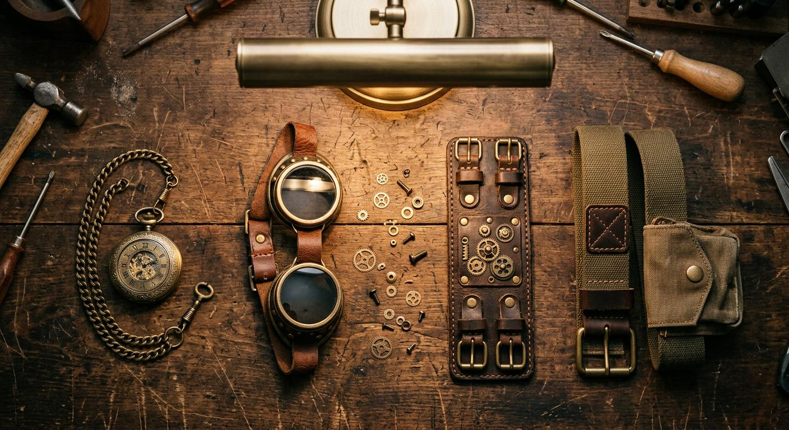
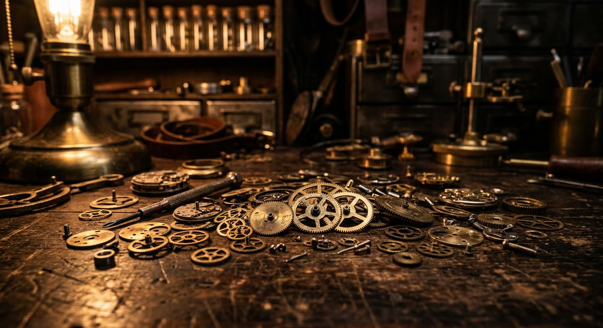
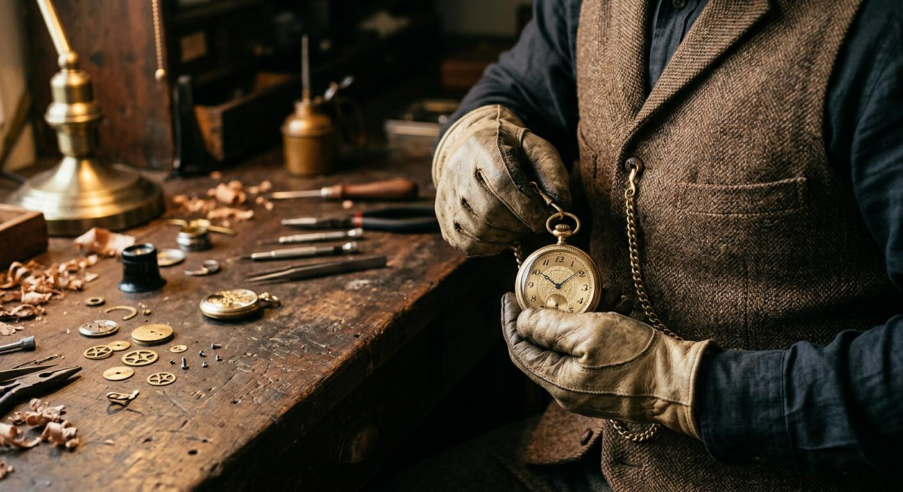
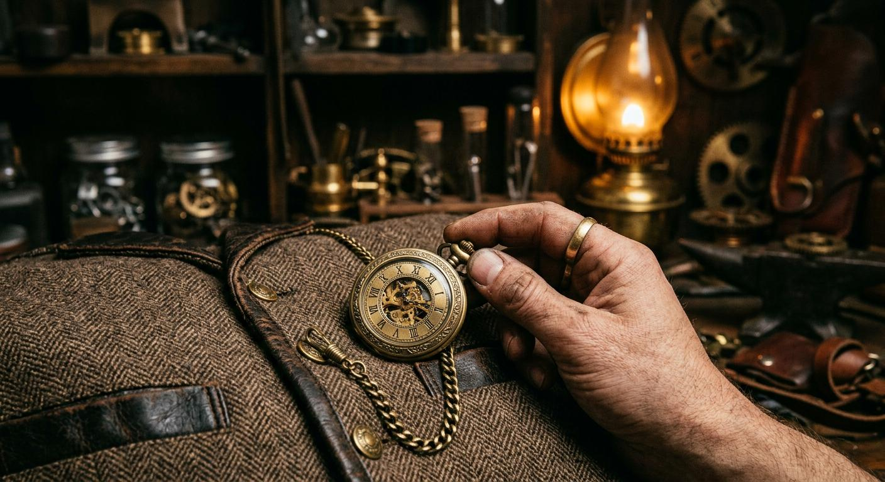
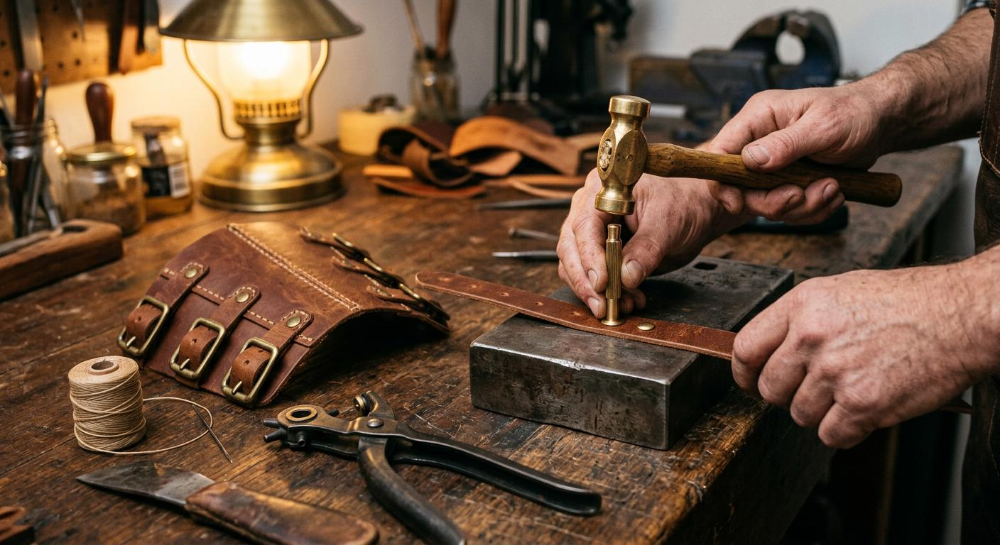
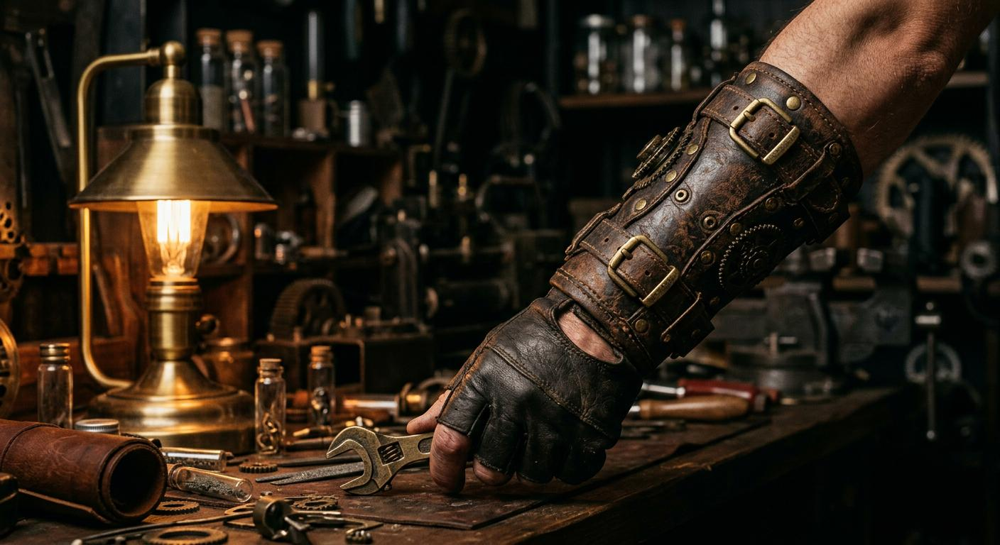
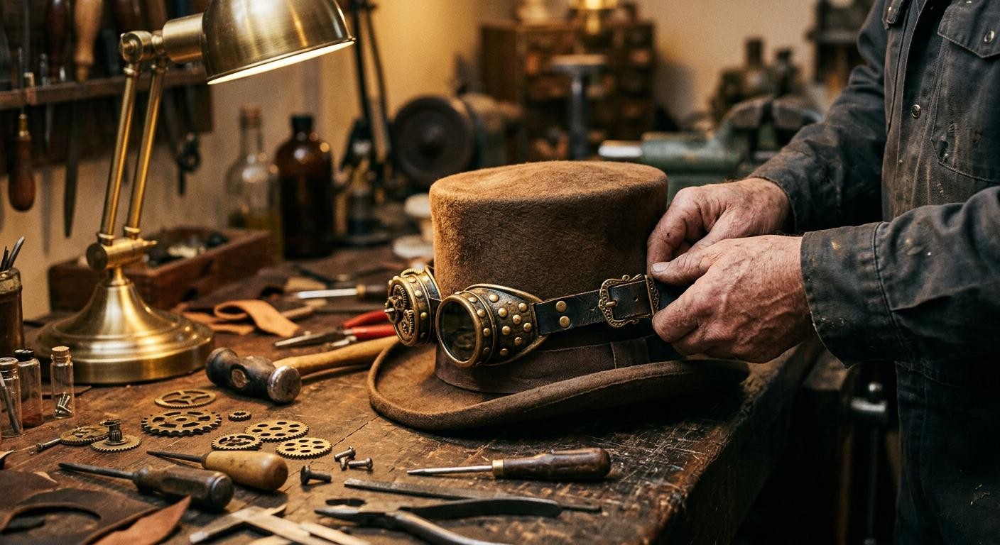
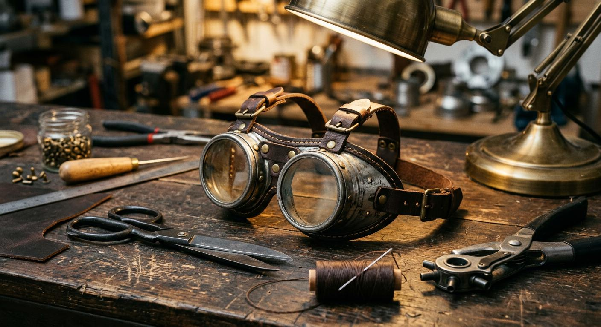
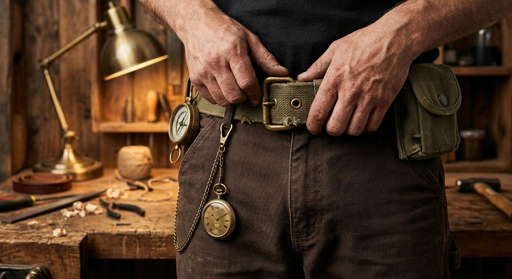
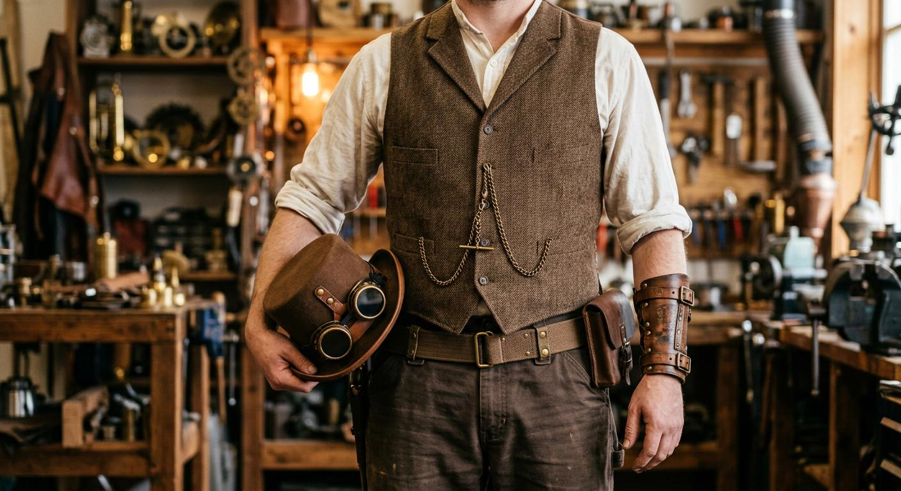

Steampunk Accessories: 25+ Must-Have Pieces (DIY + Where to Find Them)
Updated 2026-11-15
The costume is 60% done the moment you put on the right accessories. A plain white shirt and brown trousers turn into a full airship crewman the second you add a pocket watch, a leather bracer and a pair of goggles. That is the entire trick of steampunk accessorising — and it is the cheapest part of the whole outfit.
Tested and photographed in the Steamgears workshop, Aabenraa – October 2026.
Quick answer: Start with the core four: a pocket watch on a chain, goggles, one leather bracer and a utility belt or satchel. Those four pieces do 80% of the visual work for about $28 total, and everything else is garnish.
This guide covers the accessories that carry the most visual weight, ranked by impact: the small brass details, the wrist gear, the head gear and the bag. Everything links to deeper builds where it makes sense.


The Core Four: Start Here
Four accessories do 80% of the work. If you only build these, you are done:
- Pocket watch on a chain — hung from a waistcoat pocket, buttonhole or belt loop
- Goggles — on the hat or around the neck; our DIY goggles guide covers three builds
- Leather bracer or wrist cuff — one is enough, two look great
- A utility belt or satchel — anything with buckles and a pouch

Everything else is garnish. Start with the core four, wear the outfit to an event, and add pieces as you find them.
In one line: build the core four first – watch chain, goggles, one bracer, one belt – for about $28, then add pieces one event at a time.

Pocket Watches, Chains and Fobs
A pocket watch is the single most recognisable steampunk prop. Modern quartz pocket watches cost almost nothing, and the chain matters more than the watch itself. A curb chain with a swivel clip looks right with everything.
How to wear it: chain clipped to a waistcoat buttonhole, watch tucked in the pocket. No waistcoat? Clip the chain to a belt loop and let the watch hang with the fob facing out. Vintage shops sell dead watches cheap — they do not need to run, they need to look mechanical.
In one line: clip a curb chain with a swivel clip to a waistcoat buttonhole or belt loop; the watch itself does not need to run.
Bracers, Cuffs and Rings
A leather bracer on the forearm reads “adventurer” from ten metres away. Build one from a strip of 2-3 mm leather, four brass buckles and a row of rivets — an afternoon project. Stack a fingerless glove under it for extra depth.
Keep metals consistent: if your buttons are brass, your buckles should be brass. Mixed steel and gold reads chaotic rather than curated.
In one line: one leather bracer with brass buckles is enough; keep all metals the same tone as your buttons.


Head Gear: Hats and Goggles
A top hat with goggles perched on the brim is the genre’s signature silhouette. Flat caps and bowler hats work for lower-class characters — dockworkers and engineers. The goggles do not need to sit on your eyes; on the hat they are a badge of trade.
In one line: strap goggles to the hat brim, not over the eyes – on the hat they are a badge of trade and far more comfortable.

Our three goggle builds start at two tin can lids. Strap a pair to any hat and the outfit reads steampunk instantly.

Bags, Belts and Pouches
Real leather satchels from army surplus shops are perfect and cost less than costume-shop versions. Add pouches to a wide belt: a compass, a folded map, a brass magnifier. The rule is every item looks like it has a job. Pure decoration reads cheap; purposeful clutter reads expensive.
In one line: army-surplus satchels plus a wide belt with two or three working pouches beat any costume-shop bag.

What We Used: The $28 Core-Four Kit (Steamgears Workshop, October 2026)
We assembled the core four from scratch in the workshop to price and time the cheapest credible kit: a thrifted pocket watch with a new curb chain ($4), the can-lid goggle build from our DIY guide ($7 in parts, 1 hour 50 minutes), a hand-cut leather bracer from a 3 mm strip, four brass buckles and a row of rivets (~$9, two hours), and an army-surplus webbing belt with a canvas pouch ($8). Total: about $28 and one weekend afternoon.
Workshop notes: our first bracer attempt set the rivets too close to the leather edge and the strap tore at the second buckle – moved 6 mm in from the edge, it held through a full test day. We also confirmed the metals rule the hard way: wearing the brass-buttoned waistcoat with the surplus belt’s steel buckle read chaotic on camera until we swapped in a brass-buckle belt. The kit carried a plain white shirt and brown trousers to a full “airship crewman” read from about ten metres.

Where to Buy (or Build)
Check our budget guide for the thrift-store route, or browse the Steamgears shop for ready-made pieces — goggles, corsets and posters that match the guides on this site.
Frequently Asked Questions
How many accessories is too many? When one piece hides another. Three to five well-placed pieces beat ten stacked ones.
Do accessories need to match between people in a group? Match the metal tone, vary the props. A crew should look like a crew, not clones.
Are modern watches okay? Hide the digital face. A modern smartwatch under a leather cuff is common practice — nobody sees it at a convention.
What about corsets? That is silhouette territory, not accessory territory — see the full costume guide.
How much should I spend on steampunk accessories? Our core-four workshop kit came to about $28: a thrifted pocket watch ($4), can-lid goggles ($7 in parts), a DIY leather bracer (~$9) and an army-surplus belt ($8).
Where is the best place to buy steampunk accessories? Thrift and army-surplus shops for watches, belts and satchels; the Steamgears shop for ready-made goggles, corsets and posters with EU delivery.
Ready to Gear Up?
Build the core four this week: a watch chain, a bracer, goggles and a belt. Wear them with plain clothes first — you will be surprised how far they carry the character. When you are ready for the full look, the costume guide and the beginner’s guide take you the rest of the way.
About the workshop behind this guide. Every accessory in this guide was built, thrifted or photographed at the Steamgears workshop in Aabenraa, Denmark – Steamgears publishes photo-documented steampunk build guides, and the core-four kit above is our own workbench test. Meet the workshop on Facebook, Pinterest, Instagram and YouTube.
Complete this look: Airship Captain · Victorian Inventor · Dark Clockwork · Mechanical Explorer · Beginner Steampunk
Planning your first costume? The start page collects the outfit guides, the five-piece rule and the collections in one place.
Shop the look: the accessories that finish a costume fastest are a Time Traveler Top Hat with Goggles, a Brass Skeleton Pocket Watch and a Clockwork Seer \u2014 Brass Pocket Watch Pendant.